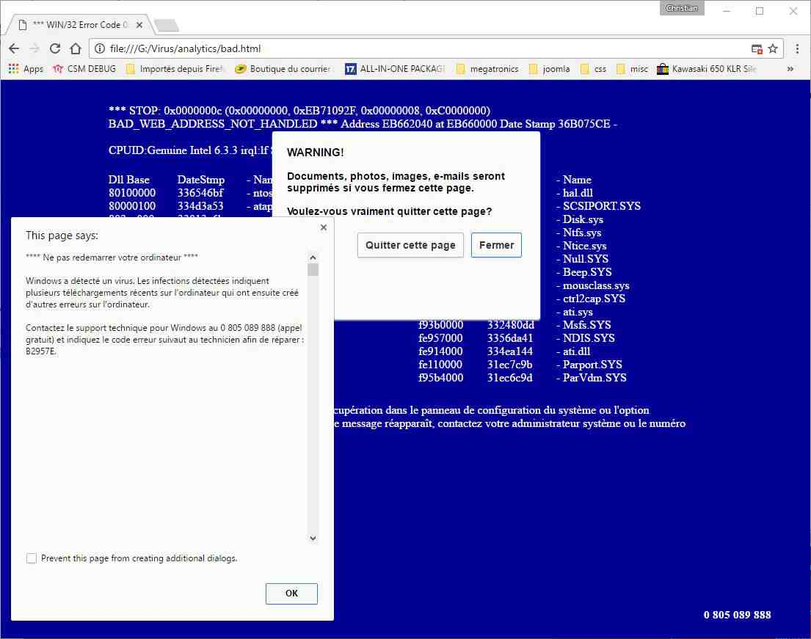
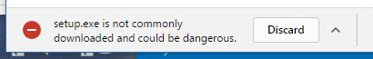
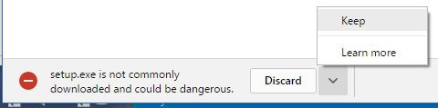
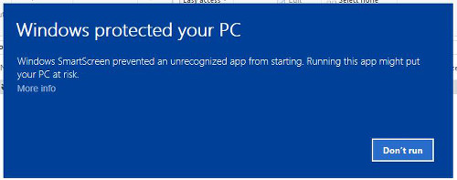
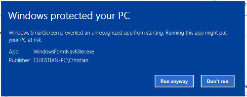
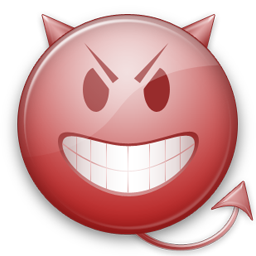
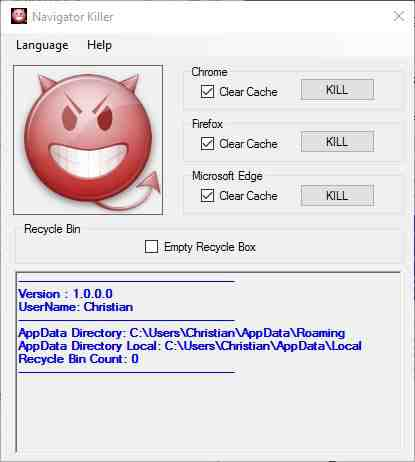

| Name: |
|
Windows Navigator Killer |
| Version: |
|
1.0.0.0 |
| Publisher: |
|
DevLabNet |
| INFORMATION: |
| |
"virus" warning popped up? Don't call that number! Don't get scammed!
Whether you have a Windows computer or a Macintosh, this could happen to you.
How it starts
You're using your computer when out of the
blue a "virus" or "infection" or "suspicious connection"
warning pops up on your screen. It will probably use a variety
of technical-sounding phrases to tell you that there's a
problems, and that you are at risk for all kinds of scary
consequences ("computer damage," "data corruption", etc.). You
might see multiple pop-ups. At the end of this text there is a
phone number you can call to get help.
In
addition you may see a "blue screen" or other colorful text
and images, claiming there is a problem with your computer.
You may also hear a man's or woman's voice coming from your
computer, telling you that this is urgent, call immediately,
you are at risk, etc. Or you might hear a siren noise.
Don't believe it!
This is a scam, pure and simple. These messages and sounds are
all designed to scare you, make you leave your common sense
aside, and intimidate you into calling that number.
The message on your screen will probably have an "OK" button
that, when you click it, closes and then immediately reopens
the alert, making you feel trapped, and reinforcing the
illusion that you have only one option, to call that number.
Don't fall for this!
Just because it says there's a problem on your computer screen
doesn't make it true.
|
| PURPOSE OF THE APPLICATION: |
| |
- This "Windows Navigator Killer" will allows to kill
"Navigator Processes" through a graphical interface.
- Who never got this kind of terrific page :

Asking you to call some phone number, and .... As
you can see, this program was created for the sole purpose
of displaying fake Windows alerts in order to scare you into
purchasing remote support services.
- If you are
infected with this program, please ignore any alerts that
are displayed and do not call the displayed number.
- Most of the time, these
pop-ups will not allow you to close your browser.
The only
way to stop this, will be to "KILL" the process of your
running Navigator (Edge, Chrome or Edge).
-
The Standard way to do this is to :
- Open Task Manager by right-clicking the taskbar,
and then clicking Start Task Manager.
Alternatively to start the Windows Task Manager, you can
press Ctrl+Alt+Del and click on Task
Manager or simply press on Ctrl+Shift+Esc.
- Scroll through the list till you see your web
browser’s process and left-click on it once so it becomes
highlighted. Once you have selected the browser’s process,
click on the End Task button.
- Your browser window should now be closed. The next
time you open your browser, do not allow the browser to
open the last opened page.
- But this is sometime not
easy to understand for people not really aware with
Computers !.
The
goal of this Application is to automate the "kiling" process
via a Graphical Interface Program.
|
| INSTALLATION / HOW IT WORKS: |
| |
- Just Install the program from this link :
"Navigator
Killer".
On tnis page, just click on the "Install" button.
A file "setup.exe" will be downloaded.
If you get a warning (if using Chrome) at the bottom of the page like this :

Just click on the "^" sign on the right off "Discard" and select "Keep" :

Then install the program, by double clicking the "setup.exe" file you downloaded.
If you get a warning like this

Click on "More Info" then Choose "Run Anyway":

- After Installation, you will get a new program with
this icon :

If your browser get blocked, just run the program by double-clicking the icon, you will get an
"Application Window" like this :

- Then, just click on the
"KILL" Button, to Kill/Close the wanted Navigator.
- The following options can
be selected by checking the checkboxes :
- Clear Cache :
Will Clear the Cache / History of the browser.
- Empty Recycle Bin :
Will Clean Out the Recycle Bin.
- Only detected running web browsers will be enabled to kill. To refresh the list, you can click once on the "Devil Image".
- You can also empty the message box by double clicking the message box.
- Clicking the "KILL" button will
"Close" the corresponding Navigator, "Empty" the Recycle Bin if
specified, and clean the "browsing Data Session Information"
to avoid the navigator to display a warning asking :
"Do
You want to Restore the Pages" when it will be restarted.
|
| ENJOY IT !: |
| |
If you like this program, Please visit my webpage to have a look at the other available softwares.
All software source codes are available under GITHUB.
BUTTON
|
|
|